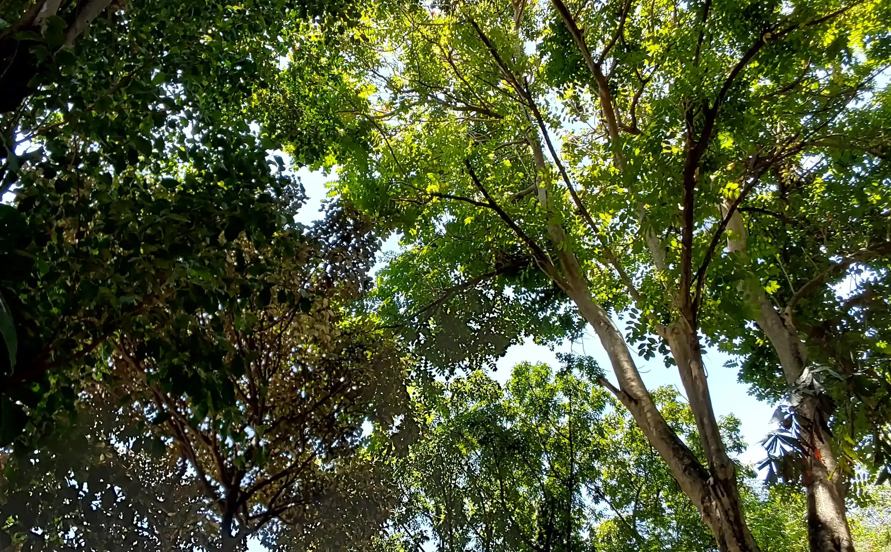
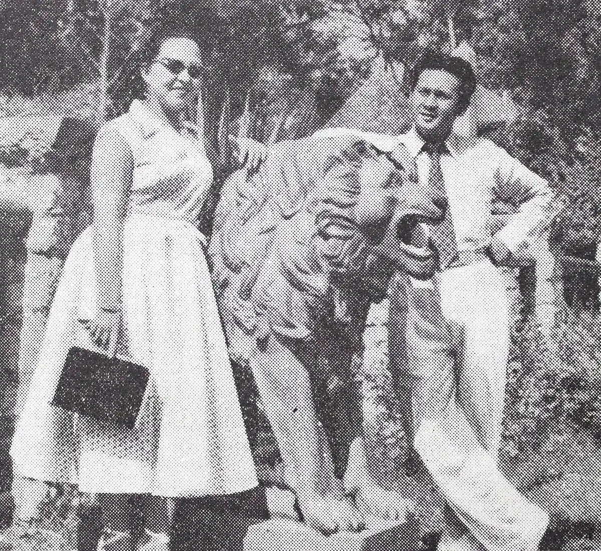

Tentang Kebun Binatang Surabaya
Berdiri 31 Agustus 1916, kini merawat lebih dari 2.000 satwa di Darmo.
Sejarah dari Kaliondo ke Darmo
H.F.K. Kommer, redaktur Pewarta Soerabaia, memulai kebun ini dari koleksi satwa di halaman rumahnya di Kaliondo. Pada 28 September 1917 satwanya pindah ke Grudo, Pandegiling, di bekas pabrik gula.
Karcis masuk mulai ditarik April 1918, 10 sen untuk pribumi dan 20 sen untuk nonpribumi. Pada 1920 lahan 30.400 m² di Darmo diserahkan untuk perluasan, lalu bertambah lagi pada 1927.

Konservasi komodo dan satwa langka
KBS terlibat dalam program peminjaman pembiakan komodo bersama iZoo, Jepang.
Lihat profil komodo